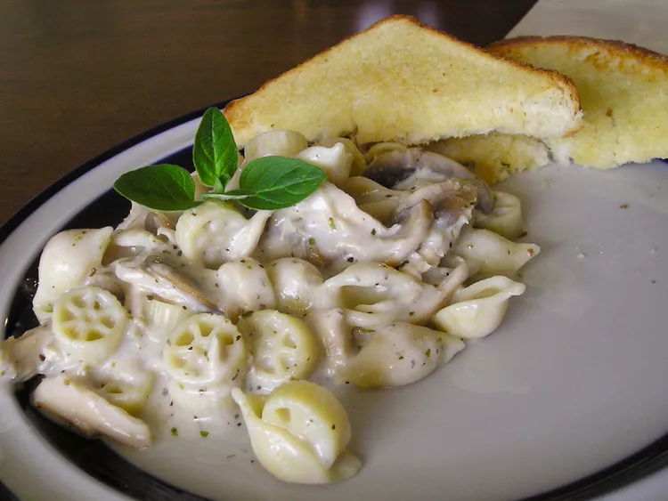

Creamy Mushroom Pasta Recipe

Description
A slippery tangle of pasta bathed in a creamy parmesan sauce loaded with
buttery garlic mushrooms, it's simple, quick, and utterly luxurious!
Ingredients
- 1x package dry fettucine noodles
- 1x tablespoon of olive oil
- 1x tablespoon of butter
- 4x fresh mushrooms, sliced
- 1x cup of chicken stock
- 1/2x cup of white whine
- 1x tablespoon minced garlic
- 1x tablespoon Italian seasoning
- 1x teaspoon of salt
- 1/2x cup of sour cream
- 1x tablespoon of cornstach
- 1/4x cup grated Parmesan cheese of topping
Steps
-
Fill a large pot with lightly salted water and bring to a rolling boil;
add fettuccine and olive oil. Cook fettuccine at a boil until tender yet
firm to the bite, about 8 minutes. Drain.
-
Meanwhile, melt butter in a skillet over low heat. Add mushrooms and
cook, stirring occasionally, until soft and dark. Stir in stock, white
wine, garlic, Italian seasoning, and salt. Increase heat to medium and
cook, stirring constantly, for about 5 minutes.
-
Reduce heat to low and stir in sour cream until smooth. Stir in
cornstarch and simmer until thickened, about 1 minute. Stir in
fettuccine or spoon sauce over servings of pasta. Top with Parmesan
cheese.